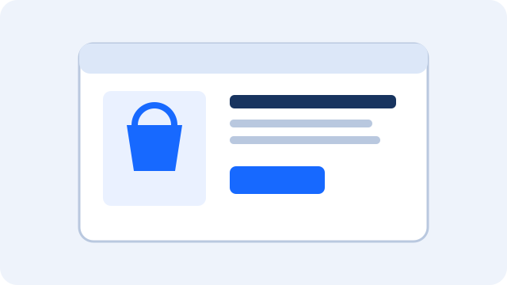

Aplicaciones estáticas
Muestran información que cambia poco. Ejemplo: una página informativa sencilla.
Las aplicaciones web se pueden clasificar por su funcionamiento o por las actividades que permiten realizar.
Muestran información que cambia poco. Ejemplo: una página informativa sencilla.
Actualizan el contenido según las acciones o los datos del usuario. Ejemplo: un portal personal.
Ayudan a estudiar, entregar tareas y realizar evaluaciones. Ejemplos: Moodle y Google Classroom.

Permiten buscar productos y hacer compras. Ejemplos: Mercado Libre y tiendas en línea.
Permiten compartir publicaciones y comunicarse. Ejemplos: Instagram y otras redes sociales.
Ayudan a crear documentos y organizar tareas. Ejemplos: Google Docs y Trello.
Pueden instalarse en algunos dispositivos y ofrecer funciones limitadas sin conexión si están preparadas para ello.